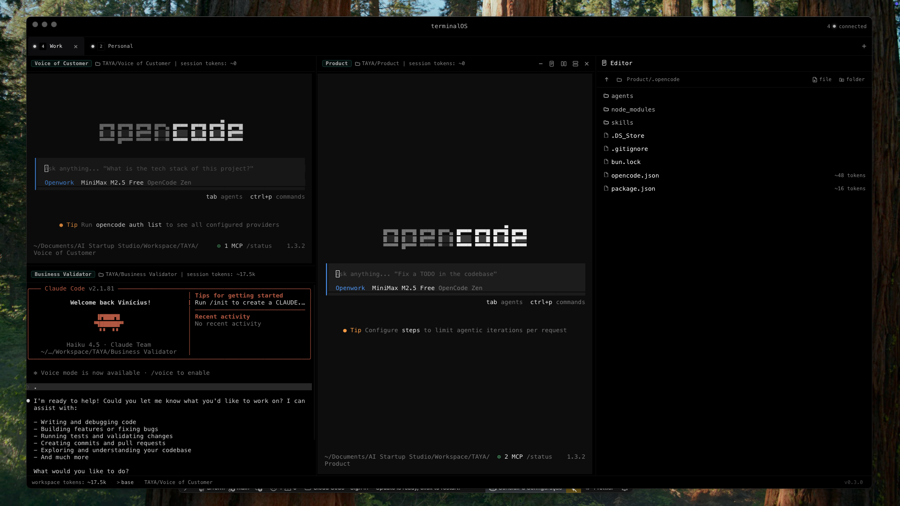
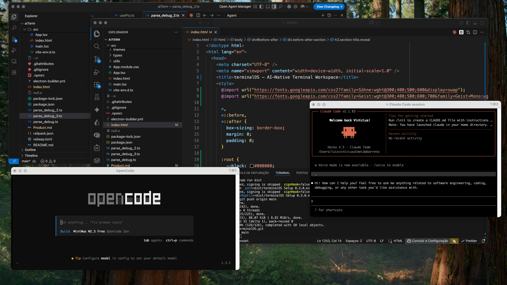

Stop juggling multiple windows. Get multi-pane workspaces, live token tracking, and integrated markdown editing in one unified app.


Core features
Built for engineers who run Claude Code, OpenCode, and Aider in parallel — and need real visibility into what's happening.
Split horizontally or vertically, unlimited panes. Layouts auto-save and restore on next launch. Minimize panes to a thin strip.
Each tab is a fully isolated workspace with its own pane layout. Name by project. Switch without losing terminal state.
Detects Claude Code, OpenCode, Aider, or Continue automatically. A colored badge appears on the pane header — no config needed.
Parses token usage from AI CLI output in real time. Per-session and per-workspace totals. Cost estimation based on detected model.
Full-featured markdown editor alongside the terminal. Live preview, file browser, syntax highlighting, PDF export, and auto-save.
Every save creates a snapshot. Browse, compare, and restore any of the last 50 versions per file — stored locally, no cloud required.
⌘K to launch any command: split pane, new workspace, open folder, or launch Claude Code / OpenCode / Aider directly.
Git branch, dirty-state indicator, app version, and component versions — surfaced live without interrupting focus.
Dracula, Tokyo Night, Nord, Gruvbox, Catppuccin, Rosé Pine, Solarized, and more. Live preview before applying.
Keyboard-first
terminalOS is designed to keep your hands on the keyboard. Launch agents, split panes, and navigate workspaces without reaching for the mouse.
Why terminalOS
The friction of juggling multiple windows, losing token context, and switching between apps adds up. terminalOS removes it entirely.
| Before | With terminalOS |
|---|---|
| 3+ VSCode windows for different projects | One app, multiple workspace tabs |
| No token visibility | Per-session and per-workspace token count with cost estimation |
| Markdown notes in a separate app | Editor integrated next to the terminal |
| Manually typing `claude` / `aider` to start AI | One shortcut per AI tool |
| No context on which pane is running AI | Live badge per pane, color-coded by tool |
| No edit history for notes and context files | Automatic version history with restore (50 snapshots) |
| No git state visibility inside the app | Branch + dirty state in the status bar, live |
Themes
Live preview before applying. Your terminal, your look.
Download terminalOS and run your AI agents from a workspace that keeps up with you.